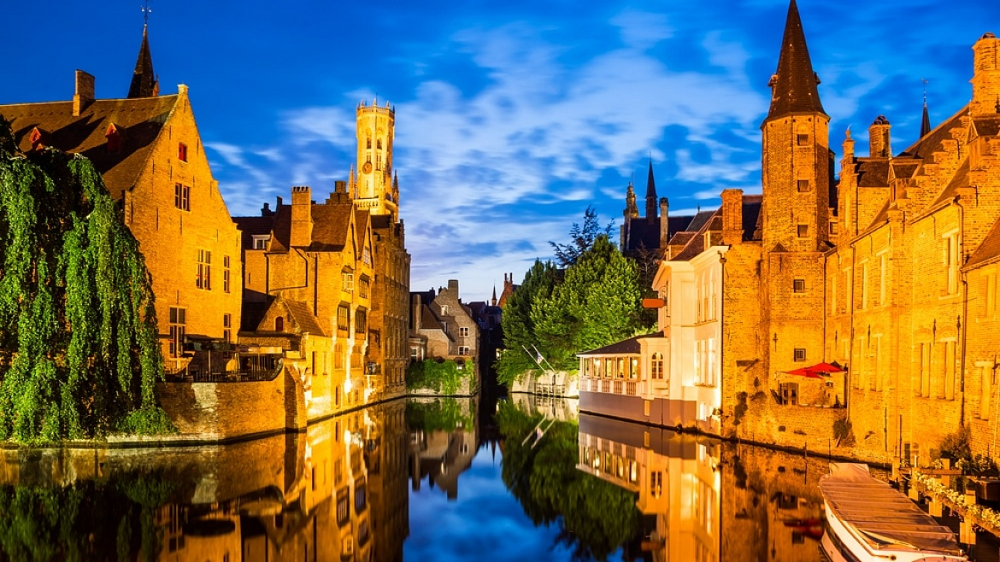
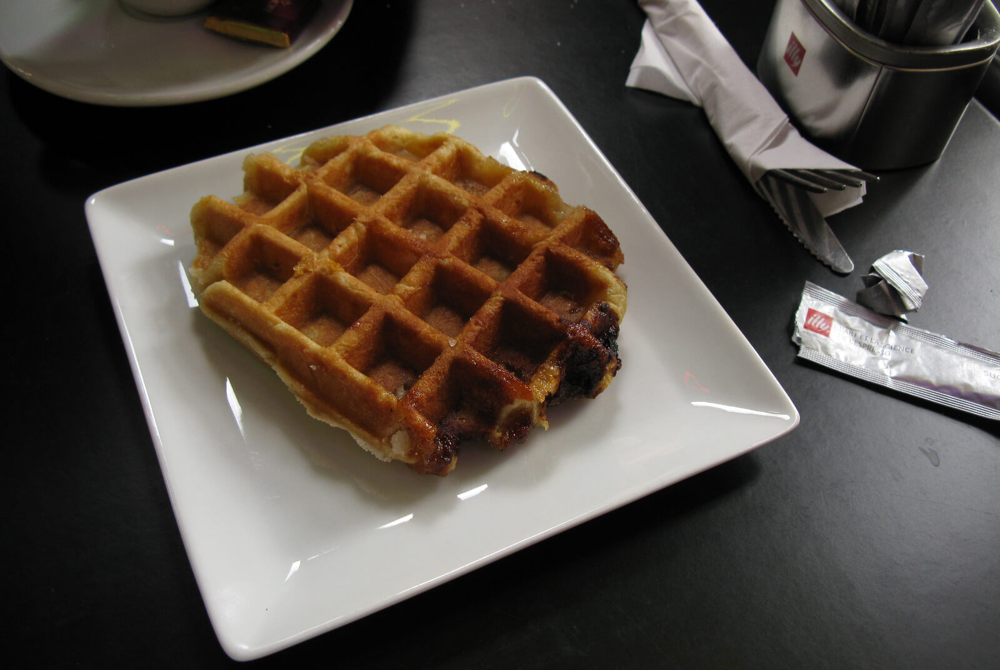
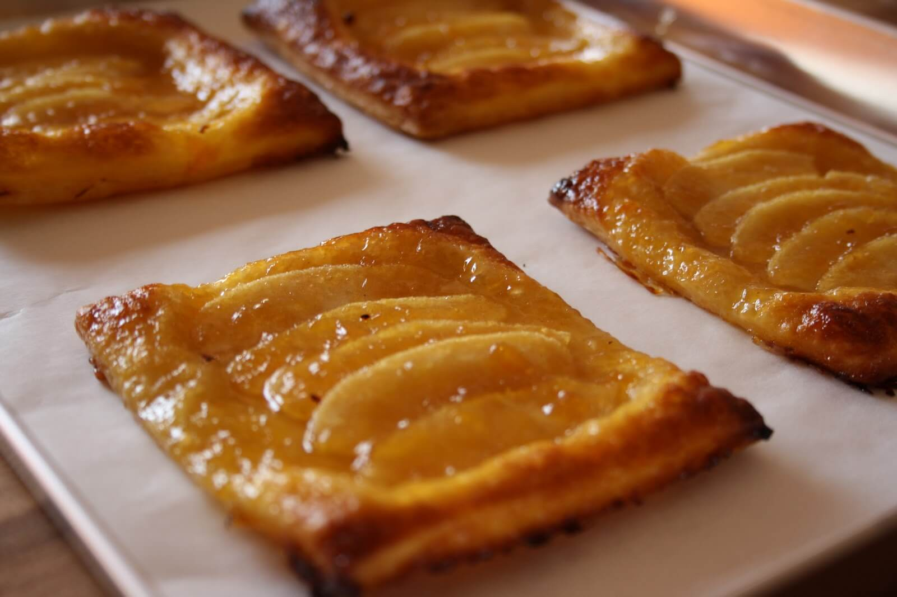
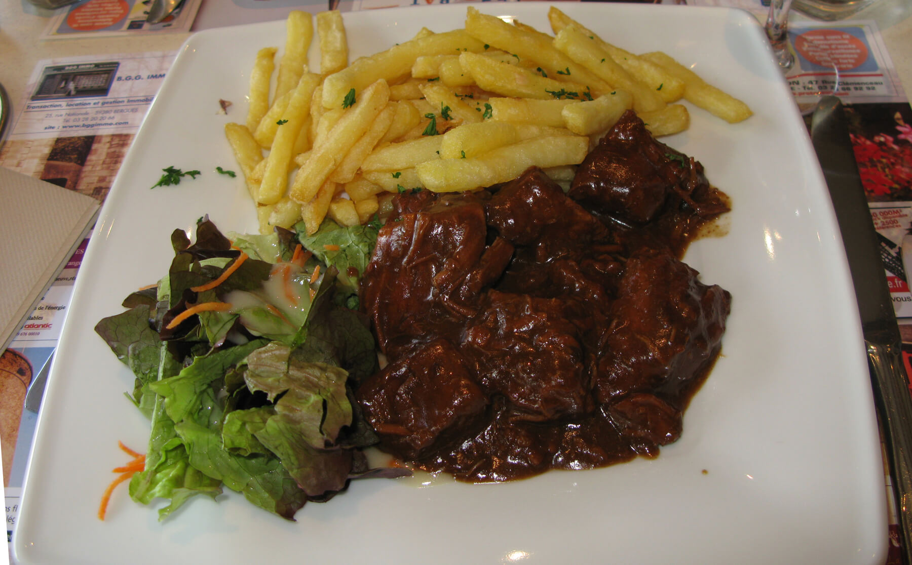
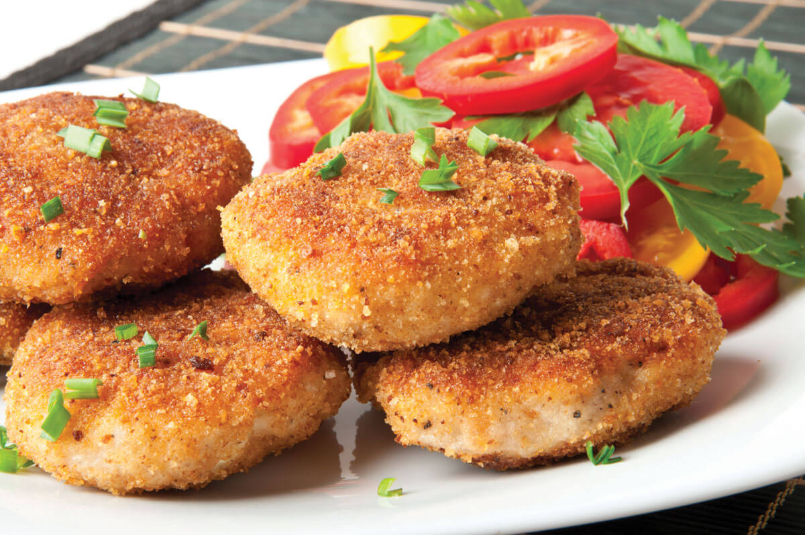
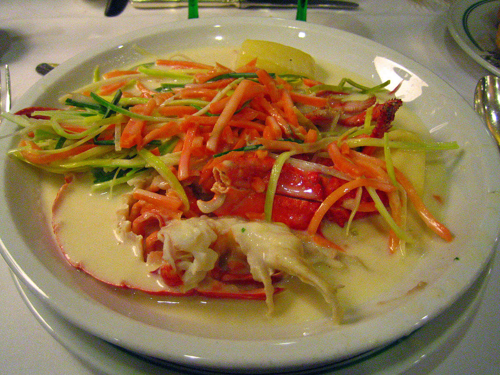

×

Belgium
Традиционная еда
Льежские вафли — Всемирную популярность вафли приобрели после Expo 1958. Льежские вафли, в отличие от брюссельского варианта, более мягкие, сладкие, овальной или круглой формы. Они сытные, а их секретный ингредиент – «сахарные жемчужины». Подают десерт с горячим шоколадом, взбитыми сливками и разными фруктами.

Яблоко в тесте — Десерт получается кисло-сладким и ароматным, его с удовольствием захотят попробовать дети и взрослые. Для приготовления используются сорта яблок с легкой кислинкой, их чистят от кожуры и семян.

Гуляш по-фламандски — В Бельгии это блюдо обязательно подают с тем сортом пиво, которое использовалось для приготовления. Говядину тушат в посуде с толстым дном. Считается, что на следующий день оно становится еще вкуснее и насыщеннее. Традиционный гарнир к мясу – картофель в любом виде и овощи.

Рыбные котлеты по-фламандски — Бельгийцы уважают рыбу, королем национальной кухни является угорь. Самый популярный рецепт – угорь в зелени, Из мяса этой рыбы готовят даже паштет.

Ватерзой — Национальное угощение бельгийской кухни, название которого происходит от двух нидерландских слов – вода и варить. Это традиционная фландрийская похлебка, ее также называют Гентский ватерзой – по региону происхождения.

____